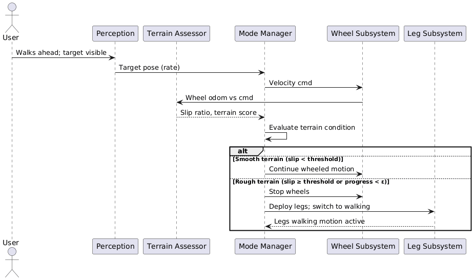
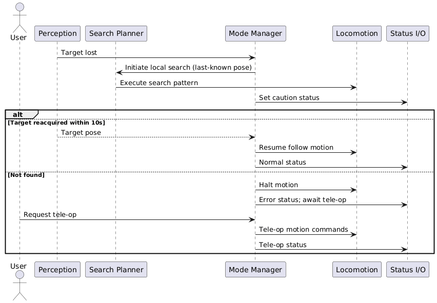
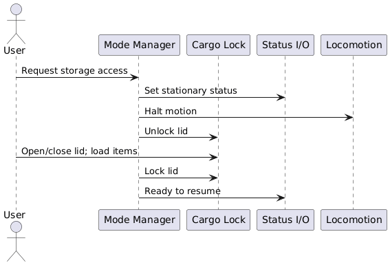
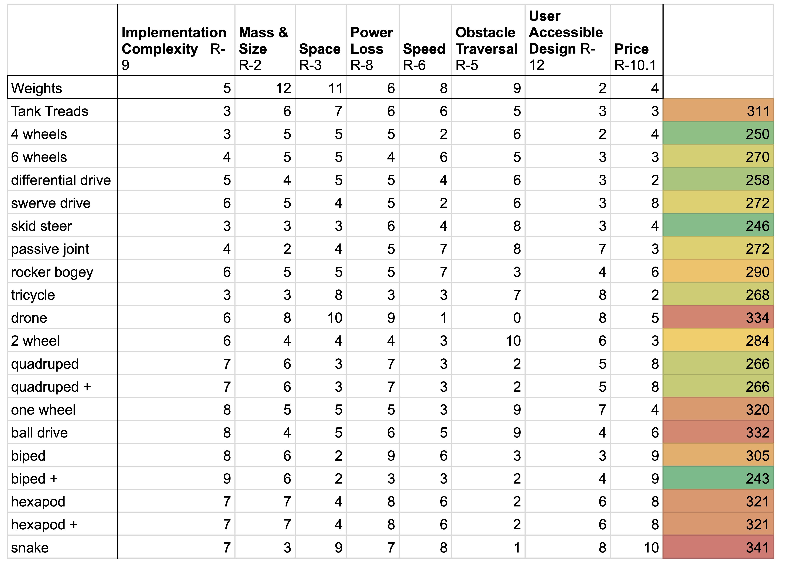

Concept of Operation
System Description
The robotic system transports a payload from point A to point B while navigating unknown terrain. It contains a secure, lidded storage compartment for safe payload transport and supports two primary control modes.
Point B is the human user the robot is tracking and following. As the user moves, point B is dynamically updated. The robot autonomously follows using integrated perception and navigation subsystems, using real-time sensing to adapt to environmental changes, avoid obstacles, and maintain a safe following distance.
Point B is determined by motion commands issued by a remote human operator. The robot interprets input commands through a control interface and adjusts its trajectory accordingly. Teleoperation allows precise manual control when autonomous navigation is not desired or possible.
A distinguishing feature of this system is its terrain adaptability. Unlike conventional wheeled robots, the system incorporates auxiliary leg mechanisms that provide stabilization and assistive interaction with the environment. The robot operates primarily on wheels for efficient traversal, while the legs deploy to improve stability on uneven terrain and assist in overcoming small obstacles such as curb-like features. This hybrid approach enhances mobility while maintaining efficiency and mechanical simplicity.
Operating Modes
The robot transitions between six defined operating modes based on user commands, sensor feedback, and system state.
Robot is powered and not moving. The storage compartment is accessible. Robot awaits user command to initiate tele-op or autonomous mode.
Vision/LiDAR/IMU-based user detection and tracking. Nominal motion on wheels. Robot tracks user, avoids obstacles, and maintains following distance. (R-6.1 / R-7.1)
Upon detecting insufficient wheel progress or minor obstacles, legs are actuated to provide an auxiliary forward push to resume travel through rough terrain. (R-5.1)
User gains full tele-operative control of the robot upon request. All autonomous commands are suppressed. Operator inputs define the robot's trajectory directly. (R-6.2)
If user is lost for more than five seconds or a fault occurs, the robot halts, signals, and awaits tele-op or manual recovery. Consistent with ISO 21448 (SOTIF) and ISO 26262 fail-safe principles.
Immediate power-cut to all actuators to enter a safe state. Requires manual reset to resume regular operation. Triggered by physical button or wireless command. (R-1.1 / R-1.2)
Mode Transitions
| From State | To State | Trigger Condition |
|---|---|---|
| Autonomous (wheels) | Rough-Terrain Assist | Wheel odometry / IMU indicates slip or stall while target tracking remains valid; terrain difficulty estimate raised; legs actuate to kick over obstacle; cautious wheeled motion resumes |
| Rough-Terrain Assist | Autonomous (wheels) | Odometry confirms progress restored; IMU indicates level surface; legs retract to stowed position |
| Autonomous | Tele-Op | User requests manual control, or system triggers recovery after failed autonomous operation |
| Tele-Op | Autonomous | User explicitly requests return to autonomous follow mode via controller |
| Autonomous | Recover / Failure-Safe | User tracking lost for >5 seconds with no successful reacquisition |
| Any State | Emergency Stop | Physical E-Stop button pressed or wireless E-Stop command received; immediate actuator power cut |
| Emergency Stop | Idle | Manual reset by operator after verifying safe conditions |
Sequence Diagrams
These diagrams illustrate the interactions between subsystems for the three most critical operating scenarios.

Sequence A: Autonomous Follow with Rough-Terrain Detection. Shows how the perception, decision, and locomotion subsystems interact when transitioning between smooth and rough terrain modes.

Sequence B: User Lost — Searching with Tele-Op Fallback. Depicts the search pattern initiated when tracking is lost, and the fallback to tele-operation if reacquisition fails within 10 seconds.

Sequence C: Storage Access While Stationary. Illustrates how the robot transitions to Idle mode, unlocks the motorized lid, waits for user interaction, then locks and resumes operation.
Trade Studies
Three trade studies informed the core technology choices: locomotion method, perception system, and communication protocol.
A prioritization-weighted analysis comparing all major locomotion architectures. "+" indicates a wheel addition to the base mechanism (e.g., "biped+" is a biped robot with wheels).

Weighted trade study across tank treads, differential drive, swerve, rocker-bogie, bicycle, quadruped, biped, unicycle, ballbot, atlas-style biped, hexapod, and snake configurations. Higher score = better fit for this application.
Numerically, the most ideal choice is the biped with wheel addition ("biped+"). While legged systems offer strong traversal capability, the final design uses a wheeled base for primary locomotion due to efficiency and simplicity. Auxiliary legs are retained in a limited role to improve stability and assist in overcoming small obstacles — giving the best of both architectures.
Five perception configurations scored across eight criteria (1–5 scale; higher is better).
| Configuration | Lighting | Range | Terrain | Compute | Cost | Power | Maturity | Total |
|---|---|---|---|---|---|---|---|---|
| RGB-D only | 2 | 3 | 3 | 4 | 3 | 3 | 4 | 21 |
| 2D LiDAR only | 4 | 3 | 1 | 3 | 4 | 3 | 4 | 22 |
| Stereo + IMU | 3 | 2 | 2 | 3 | 3 | 3 | 4 | 20 |
| RGB-D + 2D LiDAR | 5 | 4 | 4 | 2 | 3 | 3 | 3 | 24 |
| RGB-D + 3D LiDAR ✓ | 5 | 5 | 5 | 2 | 2 | 3 | 3 | 25 |
Fusing an RGB-D camera with a 3D LiDAR combines feature-rich imagery with sparse but accurate depth measurements. RGB-D cameras are sensitive to lighting changes; LiDAR depth measurements are more robust under glare and low-light conditions. A reactive tracking architecture (rather than planning-based) was chosen for its lower computational cost and faster response time in dynamic environments.
Eight communication protocols scored across five criteria. Lower total score = better fit (ranked by cost, data rate requirements, and distance suitability for this robot concept).
| Protocol | Accessibility | Cost | Data Rate | Distance | Total |
|---|---|---|---|---|---|
| I2C | 2 | 1 | 8 | 9 | 20 |
| SPI | 3 | 1 | 4 | 8 | 16 |
| UART | 2 | 1 | 7 | 7 | 17 |
| RS-485 | 4 | 3 | 5 | 2 | 14 |
| CAN ✓ | 2 | 2 | 7 | 1 | 12 |
| Ethernet ✓ | 3 | 5 | 1 | 1 | 11 |
| EtherCAT | 8 | 6 | 1 | 2 | 17 |
| USB | 5 | 3 | 3 | 6 | 17 |
Ethernet and CAN are the clear leaders for this robot concept. Ethernet is used for high-bandwidth sensor data transmission (RGB-D camera, LiDAR) while CAN bus handles motor commands and feedback — matching their respective bandwidth and latency requirements. This combination aligns with ISO 10218 and ISO 26262 principles for robust, safety-critical communication.